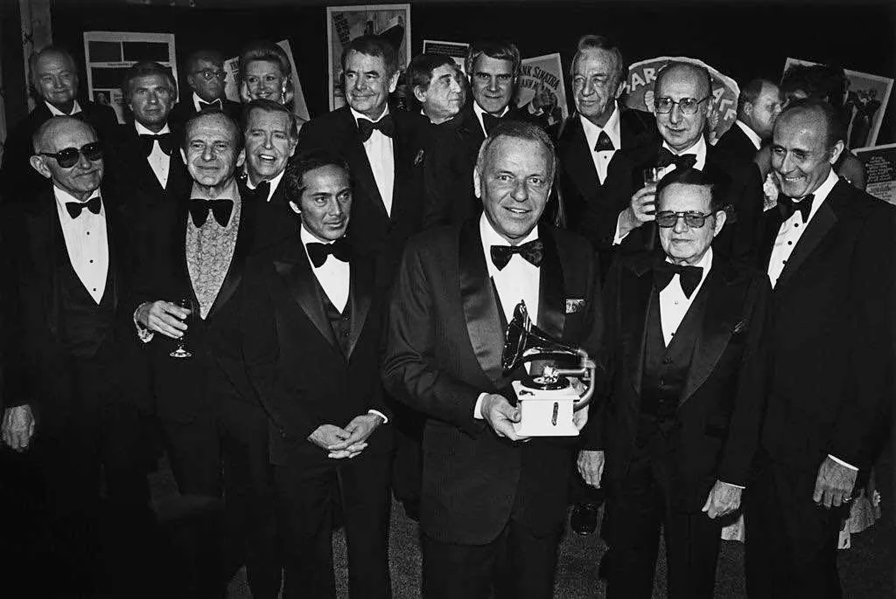

La primera ceremonia de los premios Grammy se celebró el 4 de mayo de 1959, para honrar y respetar los logros musicales de los artistas intérpretes o ejecutantes del año 1958. En el ámbito musical, representan una de las cuatro galas anuales que se celebran en los Estados Unidos (las otras tres son los actos de entrega de los American Music Awards, Billboard Music Awards y la inclusión en el Salón de la Fama del Rock). Sin embargo, los premios Grammy que se otorgan en febrero, son los únicos que constituyen un galardón, en el mundo de la música, equivalente a los Premios Óscar en el cine. Al igual que los Oscar, los Grammy se entregan por categorías, las que en la actualidad suman 90, en 29 géneros de música. No se otorgan conforme al índice de popularidad, como es el caso de los American Music Awards y los Billboard Music Awards, sino por votación. La ceremonia de los premios Grammy se transmite a través del canal CBS. La fecha límite para ser candidato al Grammy es en septiembre; por esta razón, los artistas estratégicamente se apresuran en publicar sus álbumes antes de esa fecha, con el propósito de tener opciones de ganar un Grammy en ese mismo año.4 Desde 2000, debido a la creciente importancia del mercado y de la producción musical en el ámbito de América Latina y entre la población latina de los Estados Unidos, se lleva a cabo la entrega de los premios Grammy Latinos. Estos premios, que incluyen 53 categorías,tienen como fecha límite el 28 de mayo de cada año y se otorgan en el mes de noviembre.
